Tutorial Extruturas de Repetição JavaScript |
|---|
Extruturas de Repetição são umalógica que permitem executar um bloco de código várias vezes, sem precisar escrevê-lo repetidamente. Elas são usadas quando precisamos realizar uma tarefa repetitiva, economizando tempo e esforço, além de tornar o código mais eficiente e fácil de entender.
O for permite repetir um bloco de código várias vezes enquanto uma condição for verdadeira, e é frequentemente utilizado para iterar sobre arrays ou para executar um código um número específico de vezes.
Assim,
Inicialização: A variável de controle é
inicializada aqui.
Condição : A condição é verificada antes de cada
iteração. Se for true, o código dentro do loop é executado.
Incremento: A cada iteração, o valor da variável
de controle é modificado.
Neste exemplo vamos criar um loop que imprima os números de 0 a 4
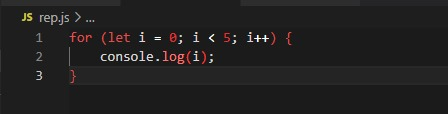A estrutura while em JavaScript permite repetir um bloco de código enquanto uma condição for verdadeira.
Assim,
Condição: Será avaliada antes de cada iteração.
Se for true, o bloco de código dentro do while será executado até a
condição ser falsa.
Neste exemplo vamos criar um loop que imprima os valores 'soma' e 'número' até que a 'soma' seja 10
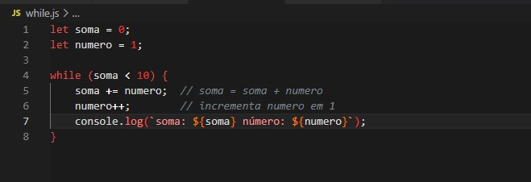A estrutura do...while é útil quando você deseja que um bloco de código seja executado pelo menos uma vez, independentemente de uma condição ser verdadeira ou falsa, e depois verificar a condição no final de cada iteração.
Assim,
Bloco de código: O código dentro do do será executado pelo menos uma vez.
Condição: Após a execução do bloco de código, a
condição será verificada. Se for true, o loop será executado novamente. Se
for false, o loop será interrompido.
Neste exemplo, vamos usar o do...while para contar de 1 a 5.
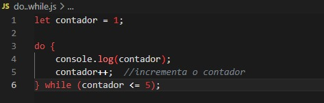Objetivo: Imprimir números de 1 a 5
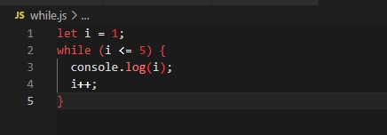Objetivo: Imprimir os números de 1 a 100 que não sejam múltiplos de 5
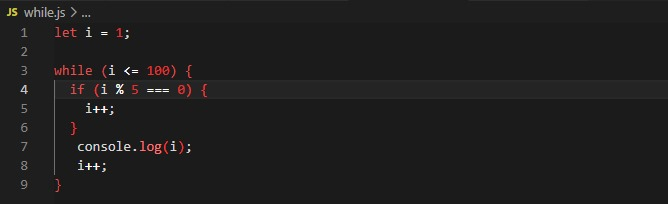Objetivo: Imprimir todos os múltiplos de 3 até o 30
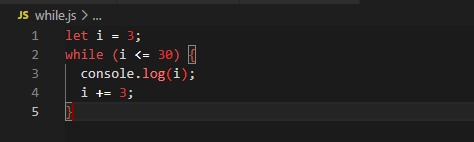Objetivo: Imprimir a soma dos números ímpares até o 20
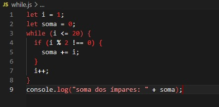Objetivo: Imprimir os números ímpares de 1 a 9
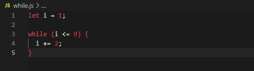Objetivo: Contagem regressiva do 1 ao 10
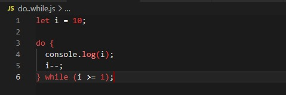Objetivo: Imprimir o valor de 'número' até atingir 10
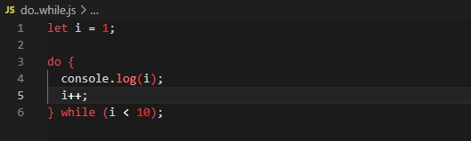Objetivo: Imprime a tabuada do 5
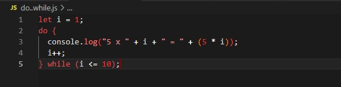Objetivo: Imprime os números pares até o 10
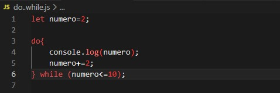Objetivo: Imprime uma mensagem até o contador atingir 10
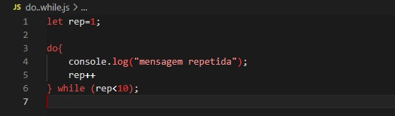Objetivo: Imprime os números pares entre 2 a 20
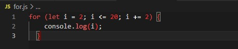Objetivo: Soma os valores de 1 a 5
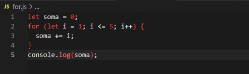Objetivo: Contagem regressiva de 5 a 1
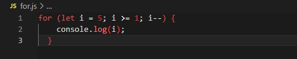Objetivo: Multiplicar cada número de 1 a 10 por 3
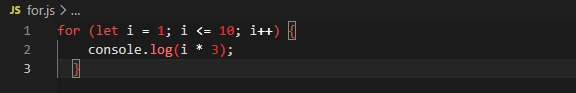Objetivo: Contar de 1 até 10 e exibir se é par ou ímpar
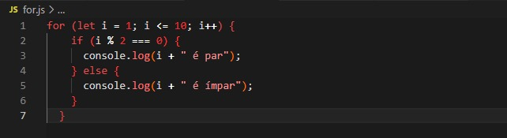